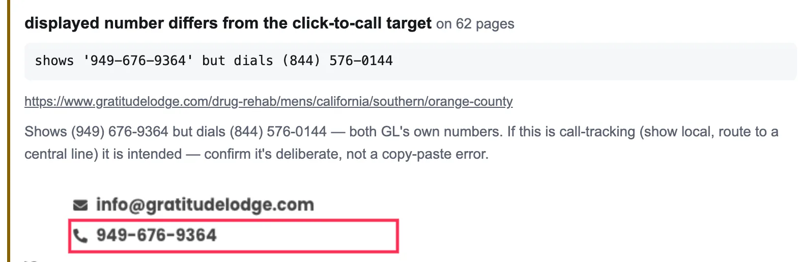
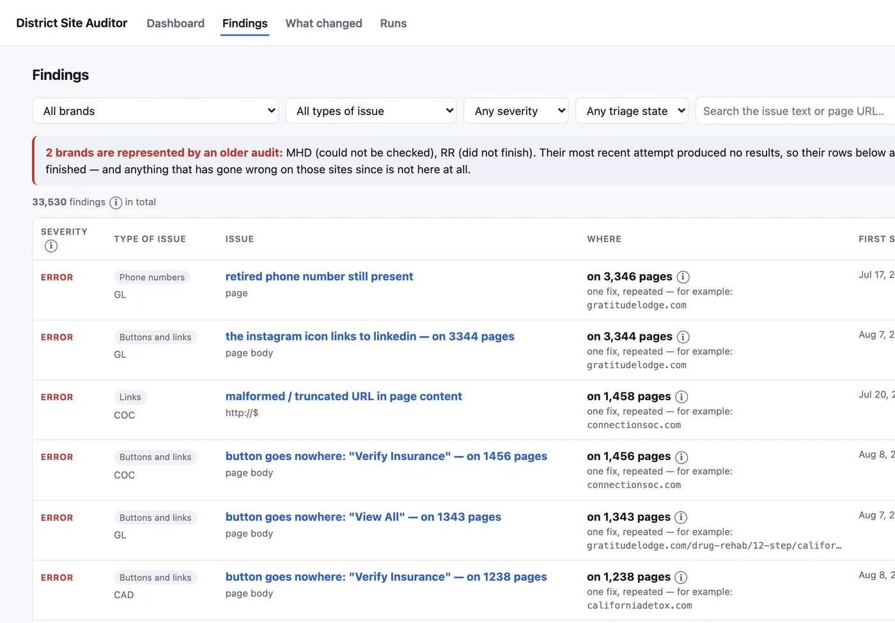
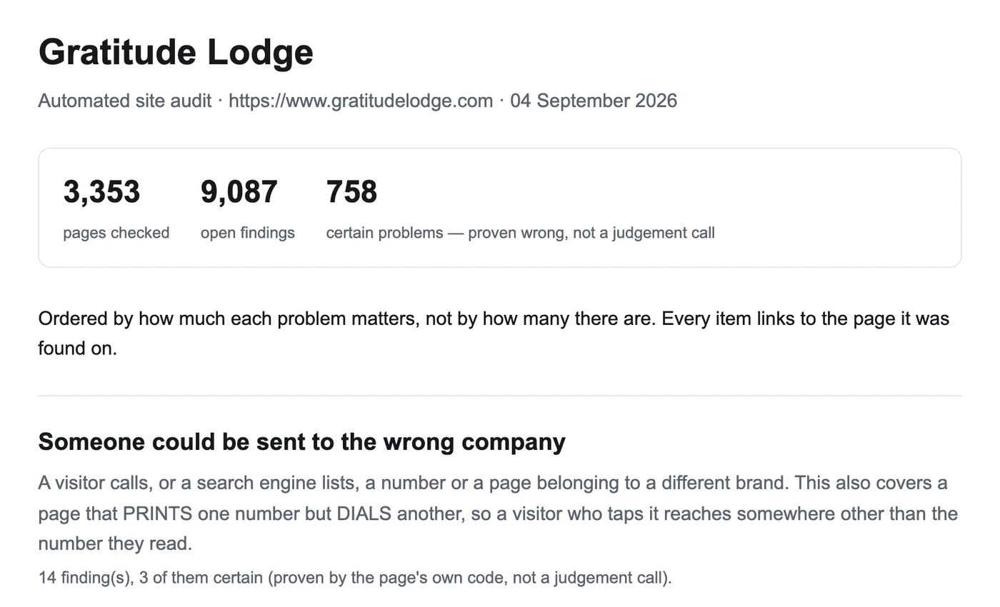

Problem
The brands' pages are generated from spreadsheets and imported into WordPress, and no automated check covered the live pages. One facility page had already shipped with call buttons pointing at the wrong number, and neither manual QA nor the existing tool caught it.

How it works
Each site is listed from its sitemap plus the WordPress REST API, then crawled with a per-brand concurrency limit. Fifteen deterministic checks run on every page. Faults that repeat because they live in a shared template are grouped into one fix each. Results go to a Google Sheet the QA team triages in, and to a FastAPI and React dashboard.
Pipeline stages, in order:
- List pages
- Crawl politely
- Run 15 checks
- Group repeats
- Refuse bad runs
- Publish
What it guards against
Reporting its own failures as the client's. A throttled sitemap read once made a 15,635-page site look like 96 pages. A rate-limited run once reached 77 of 8,029 pages, was recorded as a normal run, and produced 7,777 "unreachable" findings: 97% of the site. A run that fetches under half its pages is now refused instead of published. I set that floor from 106 real runs, where the median fetch rate was 99.7%.
How I know it works
1,089 tests, and the working rule is that each new test is first run against the unfixed code to show it can fail. The text parser is gated by fragments mostly saved from live pages. On the corruption check, 59 of 60 findings checked against the live page were real. I also tried an LLM grammar pass and a dictionary spellchecker. Only 4 to 6% of the LLM's findings survived an adversarial review, and the spellchecker's precision was 9%, so neither shipped.

Result
It found 21 pages across four brands, 3 of them internal test pages, whose call button dialled a different District brand. After one brand rebuilt its site, it caught a dead "Learn More" button on 524 of 561 pages. Grouping template faults cut the report from 50,438 rows to 35,099, with each grouped row keeping its page count.

Stack
Python, httpx, Postgres, FastAPI, React, Playwright, Google Sheets and Search Console APIs.